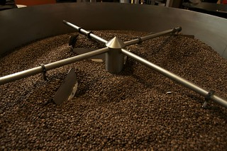
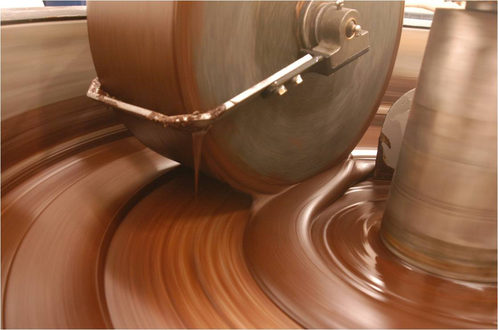

A Chococoa™ preza por manter um alto padrão de qualidade de seus produtos. Nestes, um alto grau percentual de puro cacau sempre será observado, salvas exceções onde produtos específicos exigem um percentual menor de cacau, como por exemplo o Chocolate em Pó Chococoa™ 50% Cacau.
Os grãos de cacau são aquecidos a temperaturas entre 120 a 160°C, onde buscamos a intensificação do sabor e do aroma do cacau, para uma intensa experiência palatar de nossos clientes.
Agora, os nibs de cacau são moídos de forma cuidadosa para que se possa adquirir os melhores produtos do cacau: a manteiga de cacau e a pasta de cacau.
A conchagem dos produtos do cacau são cuidadosamente fiscalizadas por nós, para que se atinja os melhores resultados em relação a textura e sabor de nossos chocolates. É durante esta etapa onde ocorre a mistura dos demais ingredientes para se formar o produto final. É também nesta etapa onde preservamos o mais alto grau de percentual de cacau em nossos produtos.
Etapa onde nossos produtos são cuidadosamente triados e embalados para garantir a plena satisfação de nossos clientes.